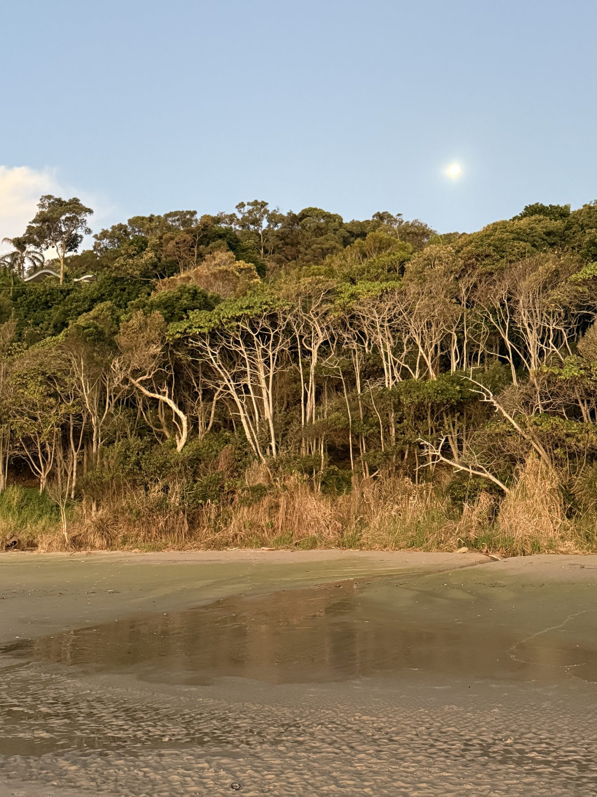
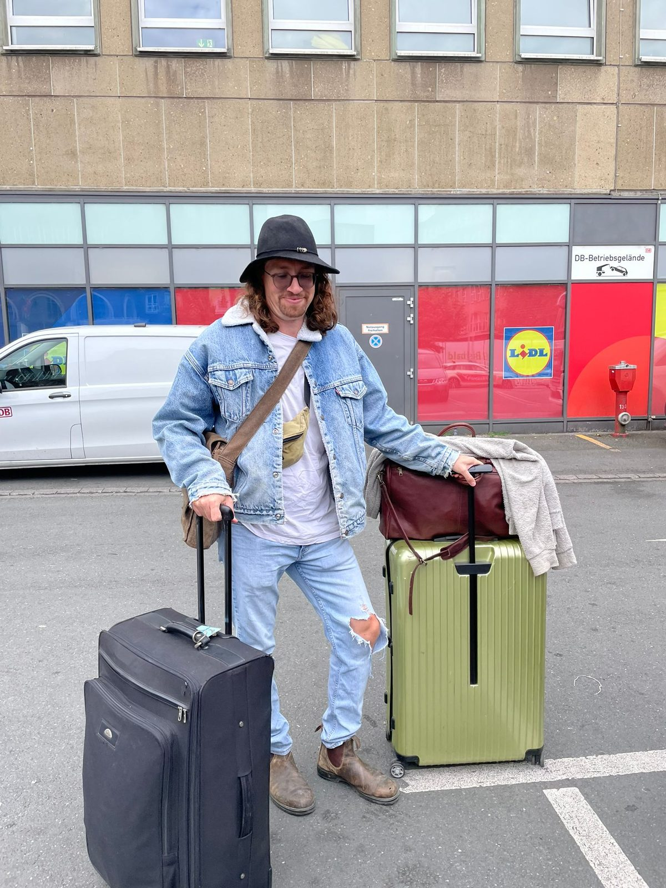
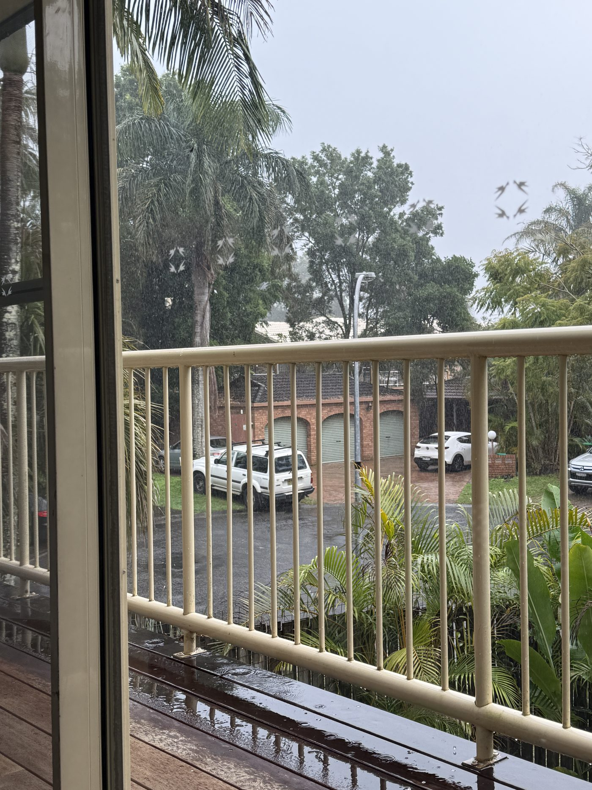
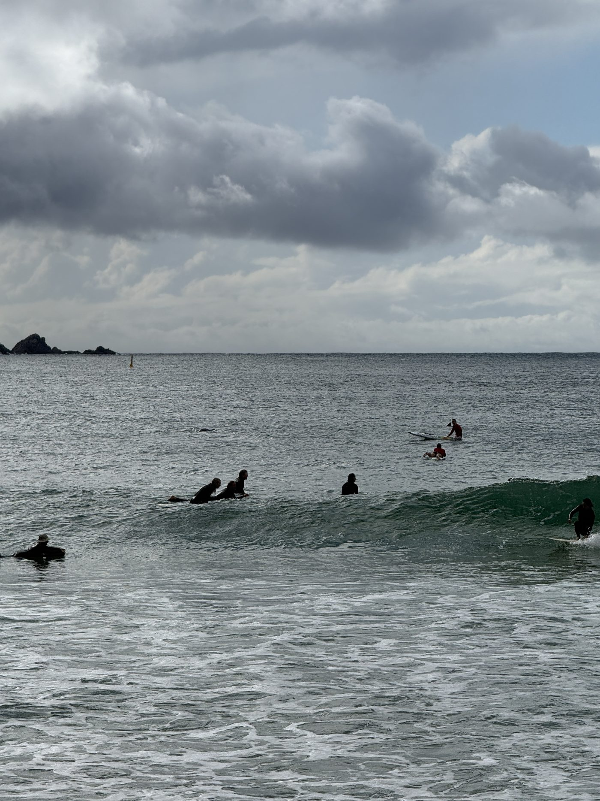

I had pictured this differently. We planned this move as a family of four, for a year. And now I am standing on the beach in Byron Bay, alone. Lucy is finishing her master's degree in Germany, the kids are with her. I flew ahead because I have to find the job here that everything depends on. On my tourist visa I am not even allowed to work yet. And still, it is being decided right now whether we can stay here long term or whether we will be heading back home after three months.
This is not a travel diary. These are the first days, as honestly as I lived them.
- Arriving is not just anticipation. Expect an emotional roller coaster, especially if you fly ahead alone.
- Plan the goodbye with the people staying behind on purpose. It cannot be made up later.
- Booking spontaneously via the Skyscanner monthly overview can save hundreds of euros (467 instead of about 800).
- Paying works easily with a German debit card via Apple Pay. Wise is not strictly needed from day one.
- Plan your groceries deliberately: IGA is expensive, Woolworths and Aldi are noticeably cheaper.
- House sitting takes a huge amount of financial pressure off at the start.
The goodbye I underestimated

We said goodbye on 23 June at Essen main station, not at the airport. Deliberately as normal as possible, for the kids' sake. I had agreed that with Lucy beforehand. Took photos, a long hug, and then I was off. For the kids it worked well, we will see each other again in a few weeks anyway.
What I underestimated was the goodbye from my parents and my family. I should have taken much more time for that. The problem was that the last weeks were so full of stress and moving out that in the end there was simply too little time left. I do regret that a little in hindsight. If you are facing a step like this yourself: plan the goodbye with the people you love as a fixed appointment and give it as much time as you possibly can. It cannot be made up later.
The flight: 467 euros and a hotel bed in China
The flight itself was the best of four Australia flights I have done. Frankfurt to Brisbane via China, with an overnight in Guangzhou. China Southern takes you by shuttle to their own airport hotel, I slept for almost seven hours, showered, big bed, air conditioning. The second flight was about 47 minutes late and lasted around eight and a half hours, but well rested it is easy to handle.
And the price: 467 euros one way. On the days around it, the same flight was about 800 euros, so almost twice as much. I found it through the Skyscanner monthly overview: a single cheap day, and then booked on the spot. For comparison, Lucy and the kids paid 3,061.80 euros for their flights together. So my single flight was much cheaper, even split across the people. How we planned the flights for the whole family is covered in detail in our article on the cost of flights to Australia.
Arrival: there faster than expected
I landed on 25 June at 8:30 am local time in Brisbane. Unusually quick through security and immigration, normally I stand there much longer. By shuttle to the car rental, by around 10 am I was in the rental car, all suitcases there. And then a two-hour drive to Byron Bay.
The place has changed. A lot has been built, a lot is developing. But I recognised almost everything straight away, it felt very familiar. I went straight to the beach, a long walk, watched the surfers and the waves, colourful birds, a bush turkey. And on that first walk I already saw dolphins. It felt very, very good.
What I did not know in that moment: the hard days were still to come.
The drive where I almost cried the whole way
I am not a particularly emotional person, I almost never cry otherwise. These first days I experienced like never before.
It started on the drive from Brisbane to Byron. I cried almost the entire way. First out of sadness, because it hit me that I am now alone on the other side of the world, without my kids, without my wife, without my parents and friends. And that there are many things we will not get to experience for a long time, some maybe never again. Then, around Byron, it flipped. Suddenly tears of joy, because a weight lifted, because what we had worked toward for almost a year is now becoming real. A complete emotional roller coaster, like I have never experienced before.
The first days were not only beautiful

The first two or three days were honestly hard. My room was okay, but nothing more. Constant rain outside. And for the first time in months I had quiet to think, instead of just functioning under constant stress. That quiet was not the break I had hoped for.
On the beach walks I cried like never before in my life. It suddenly became tangible that from now on I will only see the people closest to me every few years, no longer weekly or monthly. Of course you know that before you fly, but it only really sinks in when you arrive and it becomes reality. And I noticed something I had not expected: being alone is not the little breather from the family that you sometimes secretly wish for. Sleeping alone, waking up alone, eating alone. Above all, it showed me how much my family is my home. Beautiful and sad at the same time.
And one more thing matters to me. Our path is not meant to scare anyone off. We chose it deliberately and we are going all in. Every family goes its own way and has to decide for itself what it is willing to put at risk. Our first months are risky. Still, anyone can take something from our story. Because the things you have to deal with when you arrive are always the same. You have to find your feet again, get used to a new everyday life, meet new people. From the simple question of where to buy what, to the big one of where we will live and whether we can even afford life here. That is the same for everyone.
What the first week actually involves
So much for the head. Alongside all that, ordinary daily life keeps going, and it wants sorting out right away. This is the practical part, with the real numbers from my first week.
Paying
I pay for everything here with my Trade Republic debit card via Apple Pay on my phone, completely without a hitch. I had planned Wise as a day-one solution and have not needed it at all so far, that may become relevant later for larger transfers. I withdrew 500 AUD at a bank counter once, a 7.50 AUD fee, but I barely need cash here.
Groceries
My first shop gave me a small shock. At IGA I paid 64 AUD, for eggs, milk, toast, yoghurt, cottage cheese and coffee. So the basics. Woolworths and Aldi are noticeably cheaper, the difference is huge. With weekly planning and the sometimes aggressive two-for-one deals, I end up roughly at what we would have paid at home too. The lesson: you have to plan your shopping deliberately here, otherwise it gets expensive. What life in Australia costs overall is something we track continuously in our cost overview for moving to Australia.
Accommodation
For the first nights I have a room found via Facebook in Byron Bay, 300 AUD a week, very basic, sharing with an Australian. For the start on my own, okay. After that comes the first house sitting, a beautiful house in the hinterland with two dogs. That takes a huge amount of financial pressure off. I will write a separate article about the housing search and house sitting itself, because that is a topic of its own here.
The car
The rental car has to go back soon, and I do not want to extend it, that gets too expensive over time. So in parallel I am looking at used cars, and a few good candidates are among them. Extra motivation: my surfboard does not fit in the small rental car, and I really want to get in the water.
SIM and phone number
This is the one thing that still is not running smoothly. The Australian prepaid activation has been stuck for me for days, I am bridging it with an eSIM. Because that is a little odyssey of its own, there is a separate article coming on it.
And then it turns around after all

The turning point came with the first drive into the hinterland. That was one of the main reasons we wanted this region in particular. I sat in the car and shouted out loud with joy, something I had never done before either. I have said this line a few times now, but it is just true. So many emotional states I simply did not know. Maybe that is exactly what happens when you let go and have to shed your habits, your routine, your everyday life. After that, the anticipation came back bit by bit. For Lucy and the kids. And for experiencing all of this here together, instead of alone.
That is also why I deliberately worked, wrote and filmed very little in the first days. I had to get to grips with myself first. That was, I think, exactly the right call.
What is at stake now
The real work starts now. I am deliberately starting the job and sponsor search only in week two or three, first arrive, get oriented, sort out the car. First conversations with possible sponsors are coming up. I am open about my visa: on the eVisitor 651 I am not allowed to work for about another two and a half to three months. It is winter here right now, the businesses are planning for summer, so the lead time should fit.
The biggest worry remains the combination of the two: the family flat from the end of August is tied to a job, and the housing market here is tight. That is why the job start matters so much.
And most importantly: in a few weeks Lucy and the kids fly out. Then we will be a family of four again. Until then we talk every day, the kids call in the morning when they wake up. They are coping better than we are, by the way. Joris crosses off the days until departure on a board at home.
How it continues, the car, the housing search, the job, I will share in the next posts. If you want to follow along, come back again. How this whole decision actually came about, by the way, we wrote down in our story about the decision to emigrate.
Frequently asked questions
When did I arrive in Australia?
On 25 June 2026, landing at 8:30 am local time in Brisbane, then a two-hour drive to Byron Bay in a rental car.
Why did I fly ahead alone?
To find the job on the ground that the whole move depends on. Lucy is finishing her master's degree in Germany, and the family follows a few weeks later.
What did the flight to Australia cost?
467 euros one way from Frankfurt to Brisbane via China, booked through the Skyscanner monthly overview. On the days around it, the same flight was about 800 euros.
How do you pay during the first days in Australia?
For me, easily with the Trade Republic debit card via Apple Pay. I withdrew 500 AUD in cash once (7.50 AUD fee), but I barely needed cash.
How expensive is the first grocery shop in Australia?
My first shop with basics at IGA came to 64 AUD. Woolworths and Aldi are noticeably cheaper. With weekly planning you end up roughly at German levels.
Where do you stay right after arriving?
For the first nights I had a simple room found via Facebook in Byron Bay for 300 AUD a week. After that came house sitting in the hinterland, which takes a lot of financial pressure off.
As of: July 2026. I have been here on my own since 25 June, Lucy and the kids follow a few weeks later. We will keep sharing here, step by step.
Last updated: 4 July 2026